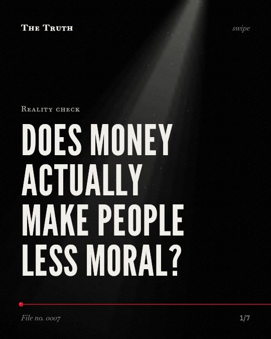

Reality check
Does money actually make people less moral?

The link between wealth and ethics is contested.
While some early studies found upper-class individuals more likely to lie or cheat, larger replications found no significant effects.
Supported. At least one solid peer-reviewed study. The evidence is mixed.
What the research found
Seven studies showed that upper-class individuals behave more unethically than lower-class individuals.
“Seven studies using experimental and naturalistic methods reveal that upper-class individuals behave more unethically than lower-class individuals.”
Experiment, 2012. Piff et al., Proceedings of the National Academy of Sciences.
Upper-class individuals were more likely to break the law while driving, relative to lower-class individuals.
“In studies 1 and 2, upper-class individuals were more likely to break the law while driving, relative to lower-class individuals.”
Experiment, 2012. Piff et al., Proceedings of the National Academy of Sciences.
Upper-class individuals were more likely to exhibit unethical decision-making tendencies, take valued goods from others, lie in a negotiation, cheat to increase their chances of winning a prize, and endorse unethical behavior at work than were lower-class individuals.
“upper-class individuals were more likely to exhibit unethical decision-making tendencies (study 3), take valued goods from others (study 4), lie in a negotiation (study 5), cheat to increase their chances of winning a prize (study 6), and endorse unethical behavior at work (study 7)”
Experiment, 2012. Piff et al., Proceedings of the National Academy of Sciences.
Under no condition did the researchers find the negative effect that would have been expected on the basis of previous results reported in the psychological literature.
“under no condition did we find the negative effect that would have been expected on the basis of previous results reported in the psychological literature.”
Study, 2015. Korndörfer et al., PLoS ONE.
Upper-class individuals' unethical tendencies are accounted for, in part, by their more favorable attitudes toward greed.
“Mediator and moderator data demonstrated that upper-class individuals' unethical tendencies are accounted for, in part, by their more favorable attitudes toward greed.”
Experiment, 2012. Piff et al., Proceedings of the National Academy of Sciences.
Vehicle status as an index of the social class of the driver was not significantly related to whether the driver let the pedestrian cross the street.
“In both studies, the vehicle status as an index of the social class of the driver was not significantly related to whether the driver let the pedestrian cross the street.”
Study, 2023. Greitemeyer, Social Influence.
The evidence is mixed.
Early experiments suggested the wealthy behave more unethically due to attitudes toward greed. However, newer large-scale tests failed to replicate these specific results.
Your assumptions about wealth may be incomplete.
That may be why you see both high-status behavior and average behavior in the same neighborhoods. The data does not support a universal rule.
This part is our reading of the evidence, not a finding.
A luxury car waits at a red light.
You watch the driver. You wonder if they will follow the rules or ignore the pedestrian waiting on the corner.
The honest summary
The evidence is mixed, with early experimental findings of unethical behavior in the upper class being challenged by larger replications that found no significant effects.
The findings are limited by differences in study types, including naturalistic replications and large-scale tests that failed to replicate earlier results.
Do you judge a person's character by their bank account?
Sources
- Paul K. Piff, Daniel M. Stancato, Stéphane Côté et al. (2012). Higher social class predicts increased unethical behavior. Proceedings of the National Academy of Sciences. Experiment, cited 1,044 times.
- Tobias Greitemeyer (2023). The relationship between social class and unethical and prosocial (traffic) behavior: two naturalistic replication studies. Social Influence. Study, cited 5 times.
- Martin Korndörfer, Boris Egloff, Stefan C. Schmukle (2015). A Large Scale Test of the Effect of Social Class on Prosocial Behavior. PLoS ONE. Study, cited 263 times.
Also read for this file, not quoted
- Spivak et al. (2015). PROTOCOL: Practices and Program Components for Enhancing Prosocial Behavior in Children and Youth: A Systematic Review.
- Hay et al. (2021). Prosocial and Aggressive Behavior: A Longitudinal Study.
- Ding et al. (2021). The Influence of Social Class on University Students’ Prosocial Behavior Based on the Game Perspective.
This file was researched and drafted by software, then checked by rules a model cannot talk its way around: each quote above was matched word for word against the paper, and every number had to appear in it. How files are made.